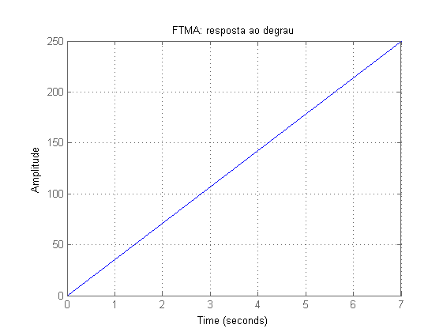
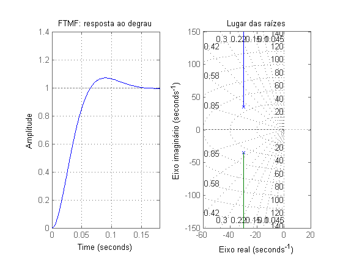
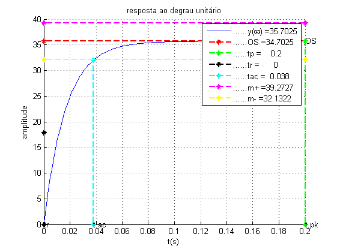

sobre
- Autor: Jonas Vieira de Souza
- Data: 02/10/2018
- Objetivo: analisar sistema de controle
Contents
Configurações iniciais
limpar figuras, variáveis e console
close all;
clear;
clc;
Constantes do modelo do motor CC
Jm, b, Ke, Kt, Ra, La
Jm = 3.228*10^-6; b = 3.5*10^-6; Ke = 0.0275; Kt = 0.0275; Ra = 4; La = 2.75*10^-6; k = Kt/(Ra*Jm); a = (b/Jm) + ((Ke*Kt)/(Ra*Jm));
Respota do sistema em malha aberta
- em malha aberta
- resposta ao degrau
- poles
s = tf('s'); G = (k) / (s*(s+a)) figure(1); step(G); title('FTMA: resposta ao degrau'); grid on; pole(G)
G =
2130
-------------
s^2 + 59.65 s
Continuous-time transfer function.
ans =
0
-59.6538

Respota do sistema em malha fechada
- FTMFq
- step
- rlocus
FTMF = feedback(G, 1) figure(2); subplot(1,2,1); step(FTMF); title('FTMF: resposta ao degrau'); grid on; subplot(1,2,2); rlocus(FTMF); title('Lugar das raízes'); xlabel('Eixo real'); ylabel('Eixo imaginário'); grid on;
FTMF =
2130
--------------------
s^2 + 59.65 s + 2130
Continuous-time transfer function.

Resposta do sistema em malha aberta à velocidade
- FTMAv
- Va(s) -> [ ? ] -> Vel_Ang(s)
figure(3);
[ ~, ~, ~, ~, leg ] = step_detail( (s*k + 0), s^2 + s*a, 0, 0.001, 0.2, 0.1, 1, 1, '' );
